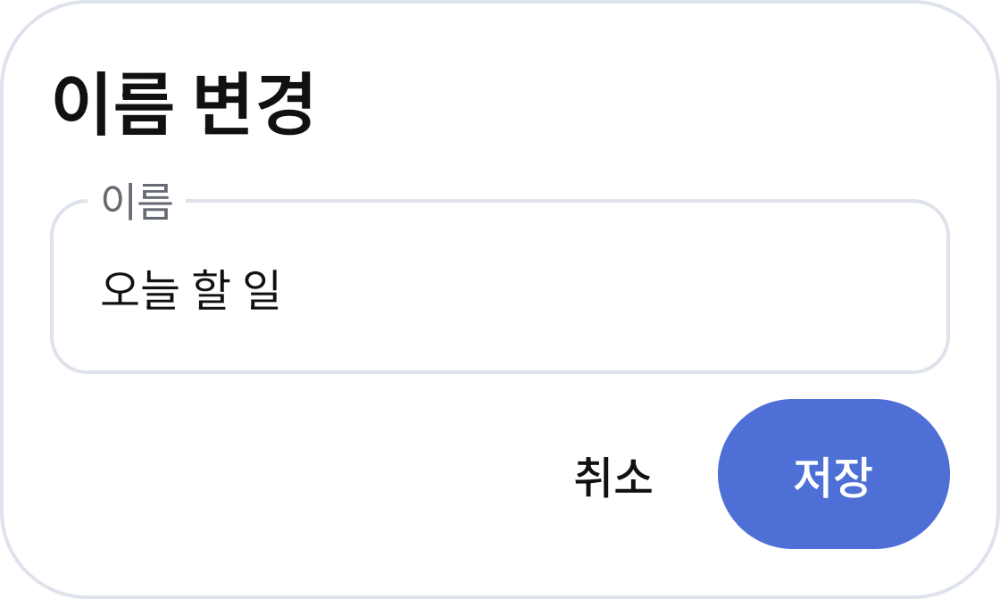
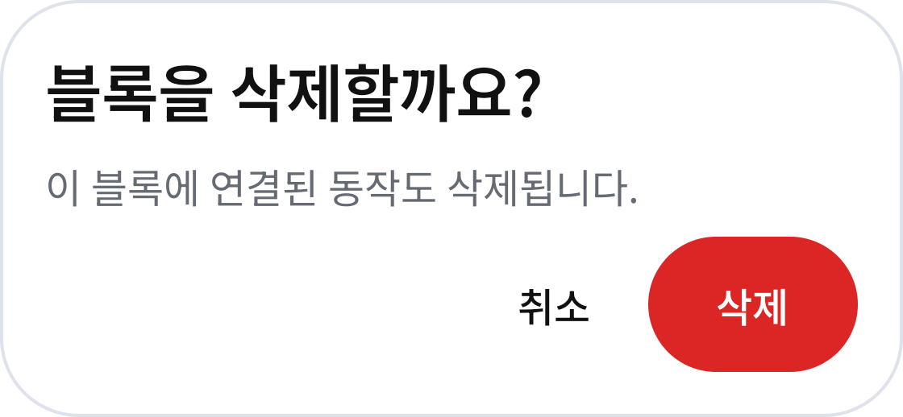
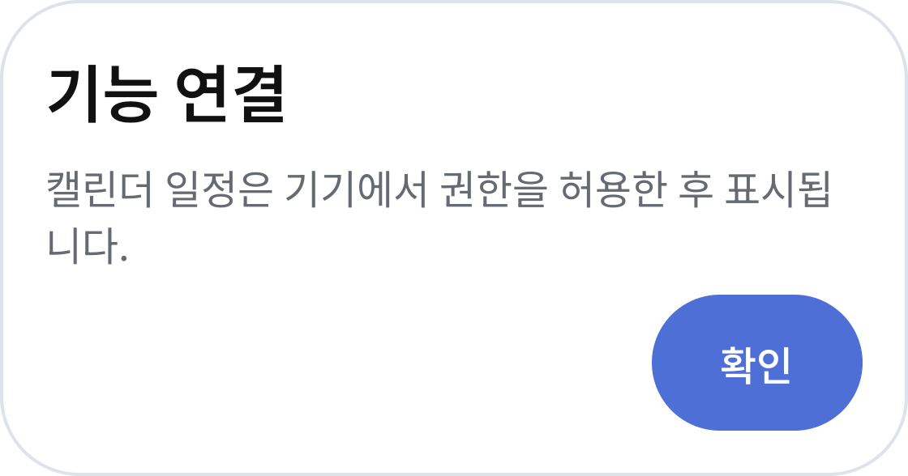
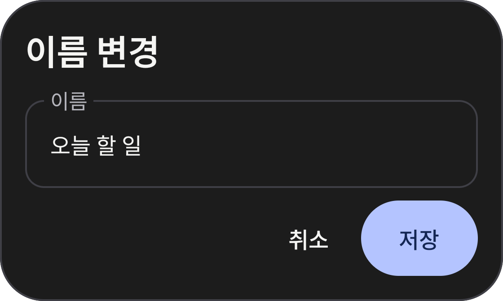
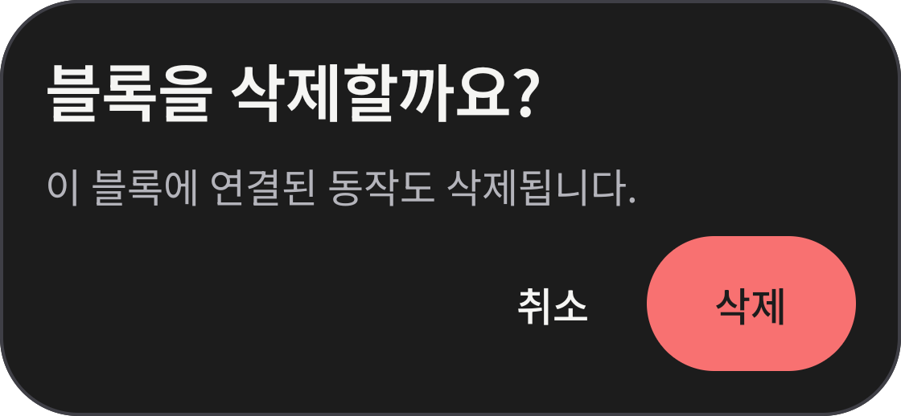
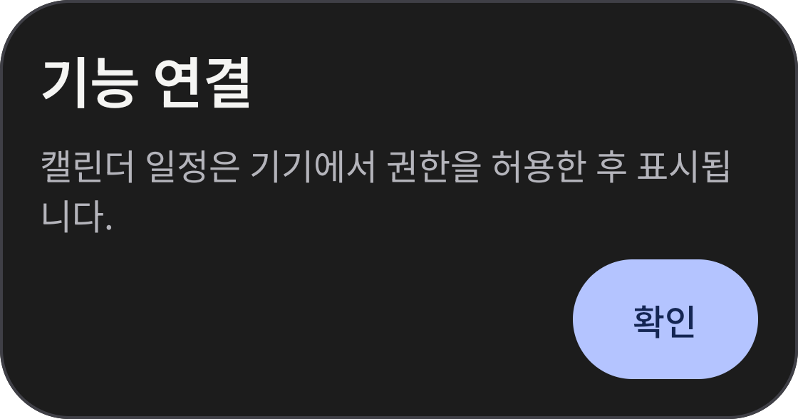

StudioDialog
입력 확인이나 삭제·안내가 필요한 중앙 모달을 제공합니다.
- 컴포넌트 ID
studio-dialog- 분류
- 모달
- 구현
StudioDialog·MyWidget/app/src/main/java/com/mywidget/editor/core/designsystem/component/StudioModalContainers.kt:473- 주요 API
- title, confirmLabel, onConfirm, onDismissRequest, showDismissButton, isDestructive, confirmEnabled, dismissEnabled, content
- 지원 상태
- 기본
- 확인 비활성
- 닫기 잠금
- 본문 스크롤
- 변형
- 확인·취소
- 단일 확인
- 위험 확인
- 크기
- 반경 28dp
- 거터 16dp
- 최소 버튼 48dp
- 테마·토큰
- WidgetEditorPopupTokens
- LocalStudioControlDensity
- primary
- error
- 접근성·사용 규칙
- 제목 헤딩과 고정 액션을 제공합니다. 본문은 독립 스크롤이며, 진행 중 시스템 Back·바깥 탭을 제한할 수 있습니다.
- 공통 사용 여부
- 편집기에서 사용 중이던 중앙 모달을 홈·보관함·런타임 취소 확인까지 적용
- 설계 품질
- 기본 동작과 본문 슬롯을 공유합니다. 호출부는 검증과 저장 결과를 소유합니다.
- 판단
- 중복 구현 통합
- 판단 근거
- 이름 입력·삭제·단순 안내의 컨테이너와 액션 배치가 중복되어 있었습니다.
- 적용 상태
- 기존 다이얼로그 컨테이너를 대체
- 구현·문서
- 현재 소스 위치와 심볼 확인
- 렌더링
- 네이티브 캡처 있음
코드 예시
StudioDialog("기능 연결", "확인", {}, {}, modifier = modifier, showDismissButton = false) {
Text("캘린더 일정은 기기에서 권한을 허용한 후 표시됩니다.")
}Android 네이티브 예시
아래 캡처에 표시된 상태와 기기 조건을 확인했습니다.

411 × 891 dp · 560 dpi · 글꼴 1배 · API 35 · ko-KR
캡처 기준 HEAD
28c96a452 · 소스 지문 2926a62326fe · 2026-11-13T13:54:53.964821Z
411 × 891 dp · 560 dpi · 글꼴 1배 · API 35 · ko-KR
캡처 기준 HEAD
28c96a452 · 소스 지문 2926a62326fe · 2026-11-13T13:54:53.964821Z
411 × 891 dp · 560 dpi · 글꼴 1배 · API 35 · ko-KR
캡처 기준 HEAD
28c96a452 · 소스 지문 2926a62326fe · 2026-11-13T13:54:53.964821Z
411 × 891 dp · 560 dpi · 글꼴 1배 · API 35 · ko-KR
캡처 기준 HEAD
28c96a452 · 소스 지문 2926a62326fe · 2026-11-13T13:54:53.964821Z
411 × 891 dp · 560 dpi · 글꼴 1배 · API 35 · ko-KR
캡처 기준 HEAD
28c96a452 · 소스 지문 2926a62326fe · 2026-11-13T13:54:53.964821Z
411 × 891 dp · 560 dpi · 글꼴 1배 · API 35 · ko-KR
캡처 기준 HEAD
28c96a452 · 소스 지문 2926a62326fe · 2026-11-13T13:54:53.964821Z사용 화면
- 런처가 추가를 지원하지 않을 때
- 보관함 이름 변경
- 보관함 문서 삭제
- 프리뷰 위 선택·편집 도구
- 문구 수정
- 위젯 크기 개요·초기화
- 목록 항목과 템플릿
- 아이콘 라이브러리·관리
- 직접 아이콘 그리기
- 연결 아이콘 이름
- 이미지 관리와 표시
- 수동 목표 편집
- 편집 문서 이름 변경
- 달력 일정 연결 안내와 캘린더 선택
- 기능 연결 권한·복구
- 목록 고정 항목 추가 액션
- 인터랙션 테스트 모드
- 설치 위젯 Custom 텍스트
- 설치 위젯 Custom 진행률
- 설치 위젯 Custom 목록
- 설치 위젯 기본 문구 동작
- 설치 위젯 기본 목록·항목 동작
- 설치 위젯 기본 아이콘 편집
- 디자인 시스템 쇼케이스
- 기능 연결 충돌 확인